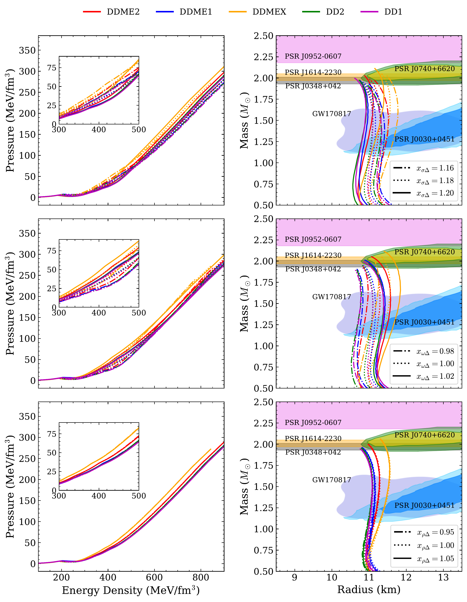
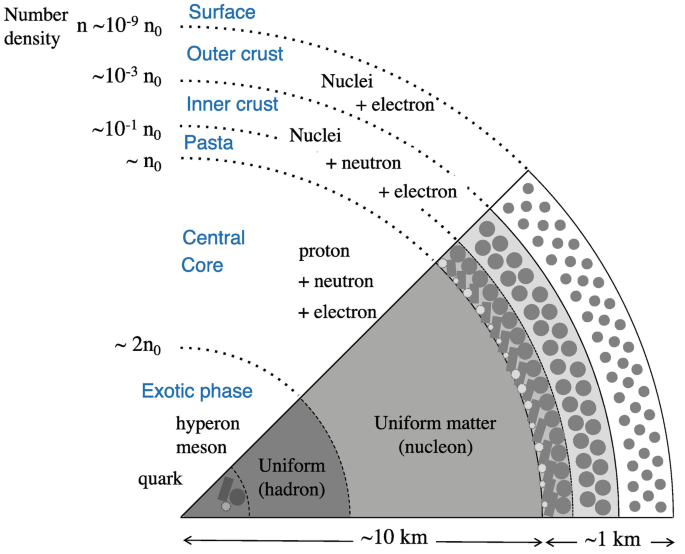

The physics of compact objects — investigating dense nuclear equations of state, Δ-isobar direct Urca neutrino cooling, and core superfluidity in pulsar glitches.
Articles and preprints investigating pulsar spin-ups, Δ-resonance weak interactions, and neutron star thermal evolution.
This work investigates sudden spin-up events (glitches) in pulsars. It explores how core superfluidity contributes to vortex pinning and glitch amplitudes in a hybrid star, examining the potential role of quark pasta structures at the hadron-quark interface as pinning sites capable of explaining large glitch magnitudes observed in Vela-like pulsars.
This work derives and computes the neutrino emissivity from novel direct Urca channels involving Δ isobars (Δ1232) within relativistic density-dependent hadronic models. The study demonstrates that Δ-direct-Urca processes open at accessible core densities and exhibit emissivities on par with or exceeding conventional nucleonic channels, substantially altering the energy-loss budget of compact stars.
This work conducts comprehensive thermal evolution simulations of neutron stars by coupling Δ baryon direct Urca neutrino emissivities with realistic stellar equations of state. The results show that Δ dUrca processes provide an efficient cooling pathway that significantly accelerates thermal relaxation, providing a compelling explanation for isolated neutron stars observed with anomalously low surface temperatures.
Bridging microscopic nuclear many-body theory with macroscopic multi-messenger astrophysical observations.
Investigating sudden spin-up events in pulsars through vortex pinning and unpinning dynamics. We explore how core superfluidity and hadron-quark mixed pasta phases influence glitch sizes and post-glitch relaxation timescales.
Evaluating weak-interaction matrix elements and phase-space integrals when Δ resonances emerge at supranuclear densities. We calculate direct Urca emissivity channels that operate efficiently inside massive neutron star cores.
Solving the general relativistic equations of thermal transport and energy balance to simulate neutron star cooling curves. We confront cooling simulations against multi-wavelength observations of thermal surface emissions.
Confronting relativistic density-dependent equations of state against astronomical observations from radio pulsars, X-ray timing, and gravitational waves.

Relativistic mean-field equations of state with density-dependent couplings (DDME2, DDME1, DDMEX, DD2, DD1) incorporating Δ isobars across a parameter space of coupling constants.

Modeling the ultra-dense matter inside neutron stars to understand their macroscopic properties. The internal structure — from the crystalline crust down through nuclear pasta phases to the uniform hadronic or exotic core — dictates the equation of state. The numerical infrastructure utilizes linear interpolation for high-precision TOV solving and tidal deformability modeling across these extreme density gradients.